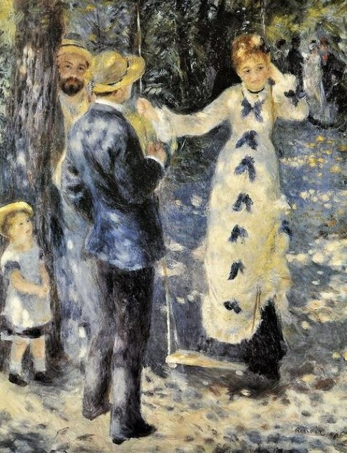
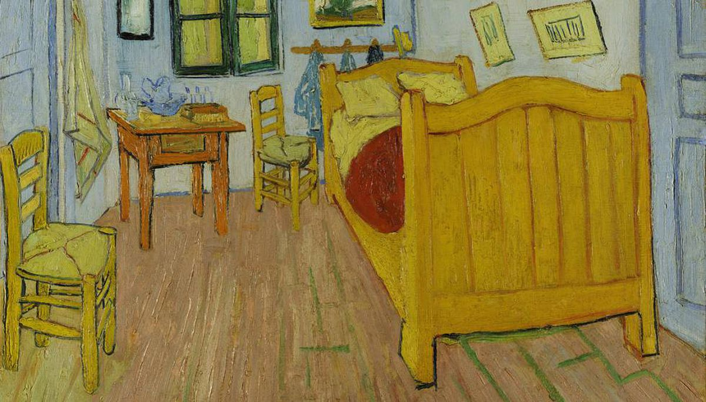
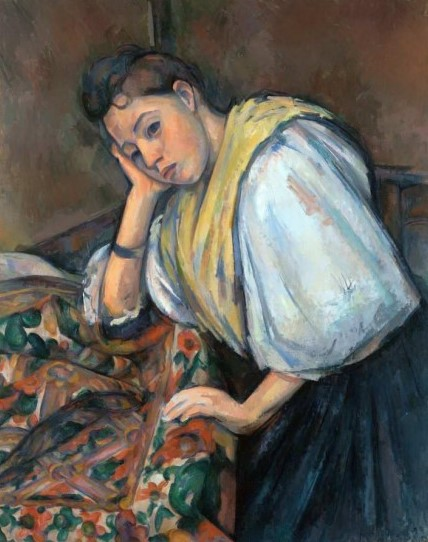
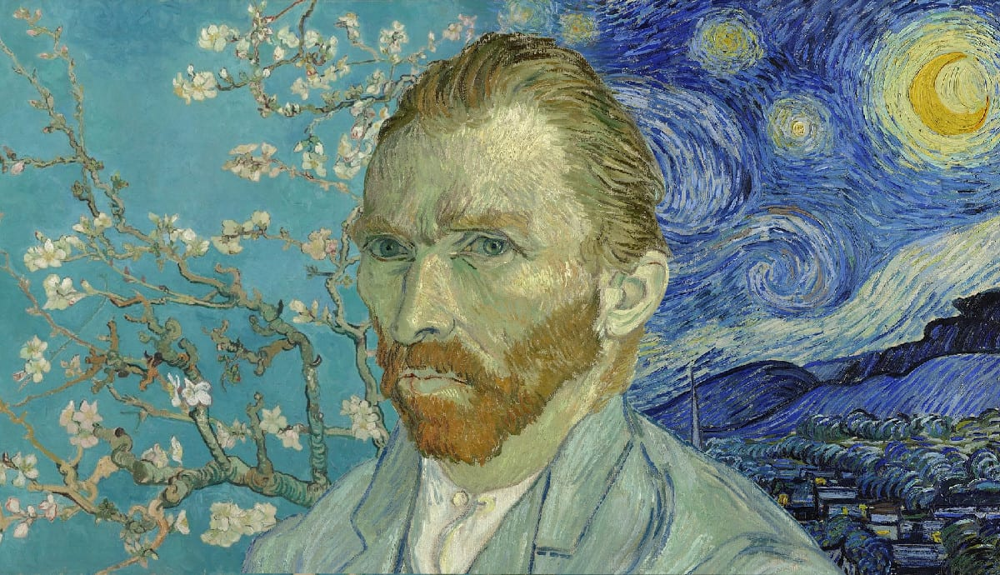
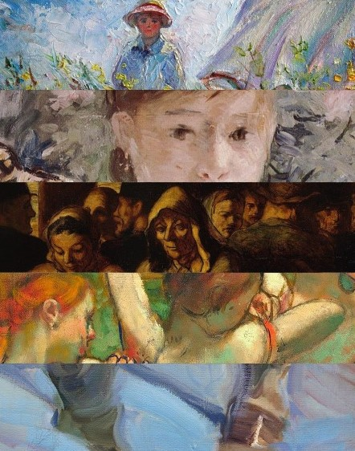

Concepto * Contexo * Influencias * Postura * Caracteristicas

Postimpresionismo
Concepto
El postimpresionismo es un movimiento artístico que se desarrolló durante la década de 1890. Se caracteriza por un enfoque subjetivo de la pintura, ya que los artistas buscaban evocar emociones a través de su obra, dejando a un lado el realismo. Si bien sus estilos varían mucho, las pinturas postimpresionistas sí comparten algunas características. Éstas incluyen motivos simbólicos, colores poco naturales, y pinceladas pictóricas.
Entre 1880, el movimiento impresionista había de experimentar su crisis, el grupo formado por los cultivadores de aquella tendencia y sus fieles amigos sólo había sufrido hasta entonces una desintegración, ahora más que nunca el grupo comenzaba a dispersarse. Conjunto de corrientes artísticas, entre 1885 y 1905 aproximadamente, nos encontramos con unos pintores que partiendo del impresionismo, derivan hacia una pintura personal.
Conocidos por sus diversos y distintivos estilos y por sus percepciones subjetivas del mundo que los rodeaba, los postimpresionistas fueron pioneros en cuanto a la forma de hacer arte a finales del siglo XIX. A diferencia de los impresionistas que los precedieron y los fauvistas que vinieron después, los artistas postimpresionistas no compartían un solo enfoque estético. En cambio, lo que los unió fue un interés común en explorar abiertamente la mente del artista.
Dada la variedad de estilos, técnicas e incluso temáticas presentes en las pinturas postimpresionistas, definir el movimiento puede ser difícil. Sin embargo, al hacer un recuento de su historia, identificar a sus artistas y determinar sus características distintivas, se puede empezar a comprender el significado histórico y simbólico de esta corriente artística.
Contexto
En Francia se anuncian algunos nuevos Movimientos pictóricos más importantes del siglo XX, (neoimpresionismo, sintetismo, neoplasticismo, entre otros). El vocablo fue acuñado a posteriori en 1910, a raíz de una exposición de pinturas de Cézanne, Gauguin y Van Gogh.
Entre 1870 y 1880, el impresionismo era la corriente vanguardista dominante en Francia. Sin embargo, muchos nuevos artistas no estaban de acuerdo con el enfoque impresionista en la forma en vez de la temática. Con la intención de revolucionar el mundo del arte contemporáneo, varios artistas con estilos disímiles —incluyendo a Paul Cézanne, Paul Gauguin, Vincent van Gogh, Georges Seurat, Henri Toulouse-Lautrec y Henri Rousseau— formaron el grupo de los postimpresionistas.
Al igual que los impresionistas, los postimpresionistas compartieron su trabajo con el público a través de exhibiciones independientes por todo París. En 1910, el conocido crítico de arte, historiador y curador Roger Fry acuñó el término “postimpresionismo” en su exposición Manet y los postimpresionistas. Al igual que los artistas de esta corriente, Fry creía firmemente que la belleza del arte está intrínsicamente anclada a la percepción. “El arte es una expresión y un estímulo a la vida imaginaria más que una copia de la vida real”, explica Fry en An Essay in Aesthetics. “El arte aprecia la emoción por sí sola. El artista es un constante observador de su entorno y el menos afectado por su valor estético intrínseco. Al contemplar un campo de visión específico, la conjunción estética caótica y accidental de formas y colores comienza a cristalizarle en una armonía”. Hoy en día, estas ideas nos ayudan a entender el hilo conductor entre estos artistas.
Influencias
De los impresionistas, el gusto por los contrastes de colores en Cézanne. De Rubens, de los neoimpresionistas y de la estampa japonesa, el rico cromatismo, los colores puros y la cursividad fluyente de las formas en V. Gogh. De las culturas exóticas de Oceanía, el primitivismo en Gauguin.
El «postimpresionismo» sucedió al estilo de pintura «impresionista». El reconocido crítico de arte inglés Roger Fry organizó su primera exposición en Londres y acuñó el término «postimpresionismo» para clasificar las obras de arte de los pintores de finales del siglo XIX. Estos artistas fueron Vincent Van Gogh, Paul Cézanne y Paul Gauguin, considerados los pioneros y predecesores de los ‘postimpresionistas’. Georges Seurat y Henri De Toulouse-Lautrec estuvieron entre otros pintores que inspiraron el «Impresionismo». Sin embargo, desarrollaron sus propios estilos para realzar y emocionar su arte, y así se unieron al club ‘Impressionist Post’.
El «impresionismo», como movimiento artístico, comenzó en Francia a finales del siglo XIX. Este estilo de pintura se centró en el estado de ánimo inmediato o el sentido visual de la vista para capturar objetos vivos, a través de los efectos del color y la luz. Los pintores «posimpresionistas» violaron el principio de registro objetivo de la naturaleza. Se centraron en dar más estructura, forma y expresión a su trabajo en sus propios estilos distintivos. Los «posimpresionistas», como los «impresionistas», usaban pinceladas amplias, colores directos y materiales de la vida real, pero eran diferentes solo para capturar una mayor profundidad emocional. Por lo tanto, agregaron nuevas dimensiones a su arte mucho más expresivo.
Los «posimpresionistas» a menudo realizaban su arte juntos en colaboración, pero preferían trabajar solos. Paul Cézanne abandonó el movimiento inicial del ‘Impresionismo’, ya que quería, en sus palabras, «hacer del Impresionismo algo fuerte y duradero como el arte en el museo». Desarrolló un estilo de pintura innovador que implicaba descomponer las cosas en su forma básica a través de la gradación de colores puros. Su estilo abstracto inspiró al gran artista Pablo Picasso a pensar en el concepto de ‘cubismo’.
Paul Gauguin vivió en Tahití y se inspiró en las comunidades rurales y el mundo tradicional para presentar el arte estético. Gauguin adaptó una forma de arte única creada dando a las armonías planas colores exóticos y sensoriales, así como una apariencia de contorno audaz en las vidrieras del lienzo. También se ocupó de la iluminación de manuscritos, donde el texto de un manuscrito está decorado con diseños o con el uso de oro o plata. Esto casi le dio un efecto poético a sus pinturas.
El pintor holandés Vincent Van Gogh fue aclamado como un pintor «expresionista» ejemplar, que le valió una reputación mundial por su trabajo arrollador y colores vivos, que expresan emociones de manera intrincada. Henri De Toulouse-Lautrec fue otro «famoso ex impresionista», famoso por su tramo sinuoso con los esquemas de color contrastantes del «Impresionismo». Georges Seurat era un experto en teorías del color y estructuras lineales. Aplicó una técnica llamada «puntillismo», en la que utilizó los pequeños puntos de color contrastante para crear una impresión increíblemente clara en sus pinturas.
Los «posimpresionistas» comenzaron como «impresionistas», pero se alejaron de su enfoque naturalista. Entraron en dominios inexplorados, agregando emociones simbólicas y significado a su arte. Con sus estilos independientes e incomparables y su compromiso de agregar nuevas dimensiones a las expresiones artísticas, los «posimpresionistas» tuvieron una profunda influencia en el arte moderno del siglo XX. Sus estilos evolutivos inspiraron varios conceptos nuevos como el cubismo, el puntillismo, el neoimpresionismo y el fauvismo.
Postura
El postimpresionismo supone entre otras cosas una recuperación de la importancia del dibujo y de la preocupación por captar no sólo la luz, sino también la expresividad de las cosas y de las personas iluminadas. Su trascendencia para la evolución del arte es, si cabe, mayor que la de los pintores impresionistas.
El Impresionismo comenzó su deceso desde la constitución del Neoimpresionismo. El carácter realista de la obra ganó el rechazo de varios artistas jóvenes que buscaban renovar las técnicas preestablecidas. Si bien, el Impresionismo renegaba los principios clasistas del arte, no fue hasta el Postimpresionismo cuando se rompió con la estética que traba de consolidar el mundo moderno colocándose contra el sistema capitalista.
El Neoimpresionismo influyó en la construcción del Postimpresionismo, evocando la fluidez y rompiendo con el patrón estricto de la réplica. El Postimpresionismo hizo una revolución total de la recreación e impuso una evasión de las representaciones reales.
“Sólo con el postimpresionismo se produjo una ruptura artística fundamental, cuando llego el final de la perspectiva científica y fue abandonada la profunda ligazón entre la creación artística y la reproducción de lo aparente, que imperó durante largo tiempo.” (Bernal, 2012, p. 33)
El Postimpresionismo marcó el inicio del arte contemporáneo y dio pie a las vanguardias. Fue este corto período el que comenzó con la exploración del inconsciente que posteriormente se desarrollaría en el surrealismo, así como la abstracción de las líneas y elementos de encuadre.
“La vaga esperanza de acceder a paraísos futuros se reducía primordialmente a la búsqueda de paraísos perdidos. Tal como había ocurrido durante el romanticismo, se esperaba encontrarlos en las condiciones de vida primitivas, es decir, de los primeros orígenes, pre-burgueses y anteriores a la aparición de la máquina moderna.” (Bernal, 2012, p. 33)
Caracteríasticas
SIMBOLISMO EMOCIONAL
Como explica Fry, los postimpresionistas creían que una obra de arte no debería de girar alrededor de un estilo, proceso o enfoque estético en particular. En cambio, la obra debería de hacer énfasis en el simbolismo al comunicar los pensamientos más profundos del subconsciente del artista. En lugar de emplear el sujeto como una herramienta visual o como un medio para un fin, los postimpresionistas lo percibieron como una forma de transmitir sentimientos.
COLORES LLAMATIVOS
“¡El color! Qué profundo y misterioso lenguaje, el lenguaje de los sueños”. -Paul Gauguin
A diferencia de los impresionistas, quienes buscaban capturar los efectos de la luz natural sobre los tonos, los postimpresionistas deliberadamente adoptaron una paleta de color artificial para representar su percepción emocional del mundo que los rodeaba. Tonalidades saturadas, sombras multicolor y una gran variedad de colores son evidentes en la mayoría de las pinturas postimpresionistas, mostrando el enfoque innovador e imaginativo de los artistas hacia la representación.
PINCELADAS DISTINTIVAS
Al igual que las pinturas que pertenecen al impresionismo, la mayoría de las pinturas postimpresionistas presentan pinceladas gruesas y perceptibles. Además de añadir textura y un sentido de profundidad a la obra de arte, estas marcas también apuntan a las cualidades pictóricas de la obra, dejando claro que no pretende ser una representación realista.